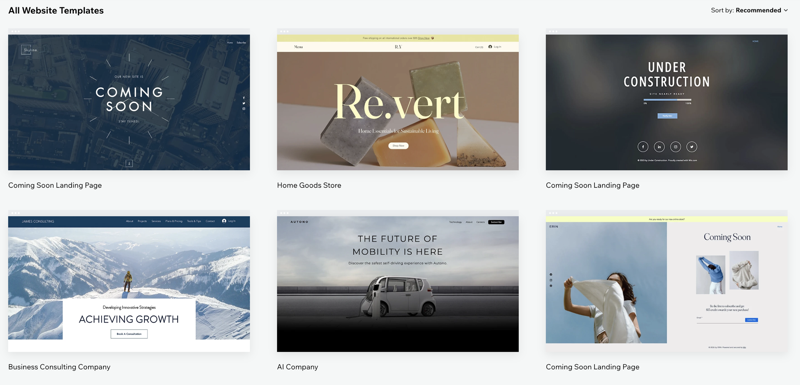

Project One
Free Series Hub is a web platform that gathers and organizes the best free YouTube series from across the internet into one convenient location. Instead of searching channel by channel, users can browse curated playlists by category, topic, or popularity. Whether it’s tech tutorials, documentaries, entertainment series, or educational content, everything is neatly categorized for easy discovery. The goal is to make learning and entertainment more accessible by eliminating the hassle of hunting for quality content on YouTube — all while keeping it completely free..
View Project

Project Two
WebTemplateHub is a responsive and user-friendly web platform that offers a wide range of customizable website templates for various purposes, including business, portfolio, e-commerce, blogs, and personal sites. The platform is designed to help individuals, students, and small businesses quickly launch professional-looking websites without needing advanced design or coding skills.
View Project

Project Three
A visually striking, fully responsive website designed with a modern dark UI for an immersive and elegant user experience. The project focuses on accessibility, minimalism, and readability, using high-contrast color schemes and smooth animations to enhance visual appeal without compromising usability. Developed with HTML, CSS, and JavaScript, it features intuitive navigation, responsive layouts for multiple devices, and optimized performance for fast loading. The dark theme not only improves eye comfort but also provides a sleek, professional aesthetic suitable for creative portfolios, blogs, or business presentations.
View Project